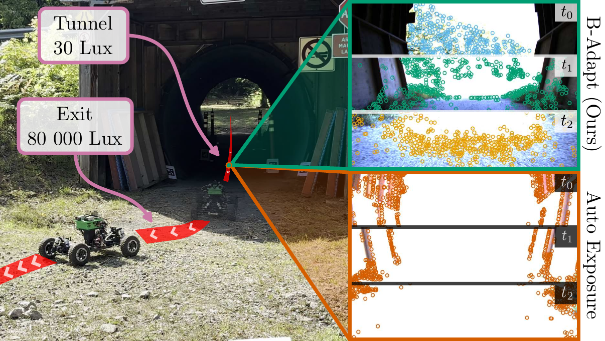
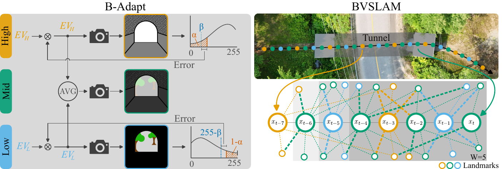
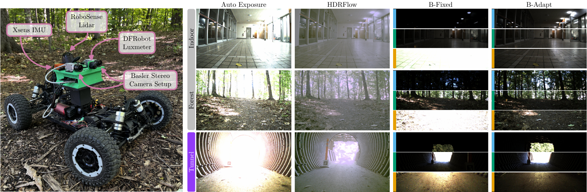

Bracketing Shows the Way
Adaptive Multi-Exposure Policy as Input for Robust Visual SLAM
Northern Robotics Laboratory, Université Laval

Abstract
Rapid illumination transitions can disturb visual SLAM by saturating images before the auto-exposure (AE) policy adapts, removing the visual correspondences needed to maintain tracking. Our proposed methods mitigate this disturbance at two levels. B-Adapt acquires adaptive exposure brackets to cover the scene dynamic range while promoting photometric overlap. BVSLAM directly uses the multi-exposure sequence as constraints in a factor graph state estimator, without relying on HDR merging. We evaluate both methods against state-of-the-art approaches in nominal environments and during a repeated tunnel-exit transition at an emulated vehicle speed of 32 m/s. In the tunnel, combining B-Adapt with BVSLAM reduces the state estimation error by 78% compared with AE images. These results suggest that bracketing efficiently improves visual pose estimation robustness to rapid illumination disturbances while retaining low error under nominal conditions.
Video
Method

B-Adapt
An online acquisition policy with two independent control loops: one keeps the bright tail below saturation, the other keeps the dark tail above the noise floor. A minimum separation keeps the brackets from collapsing, and the L, M, H, M ordering keeps consecutive exposures similar.
BVSLAM
A stereo factor-graph VSLAM (GTSAM) that uses SuperPoint and LightGlue to link landmarks across exposure levels. It does not merge images into HDR and uses a zero-motion prior. It runs a sliding-window smoother followed by a global bundle adjustment.
Experiments

BibTeX
If you use this code or data, please cite our paper. This is a placeholder entry; it will be updated with the arXiv identifier and the final publication details.
@article{gamache2026bracketing,
title = {Bracketing Shows the Way: Adaptive Multi-Exposure Policy as Input for Robust Visual {SLAM}},
author = {Gamache, Olivier and Lavertu, Anthony and Duclos, David-Alexandre and Fortin, Jean-Michel and Pomerleau, Fran{\c{c}}ois and Gigu{\`e}re, Philippe},
journal = {arXiv preprint arXiv:XXXX.XXXXX},
year = {2026}
}